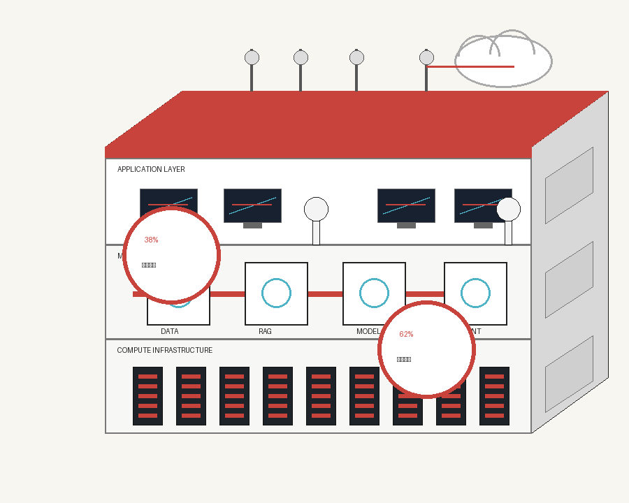

Industry Anatomy Report
用“产业解剖图”表达行业研究：中央主视觉呈现行业系统，左侧拆产业链，右侧放关键驱动、指标、排行和分布，底部总结从基础设施到解决方案的路径。
Source: public data, company filings, industry reports
Replace this with your research source note

72%应用层预算
预计增长
预计增长
62%企业仍处
试点阶段
试点阶段